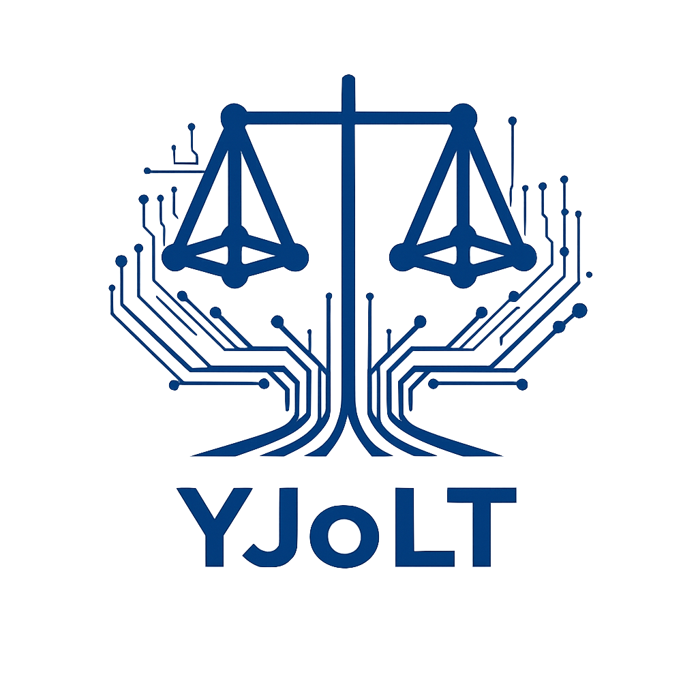
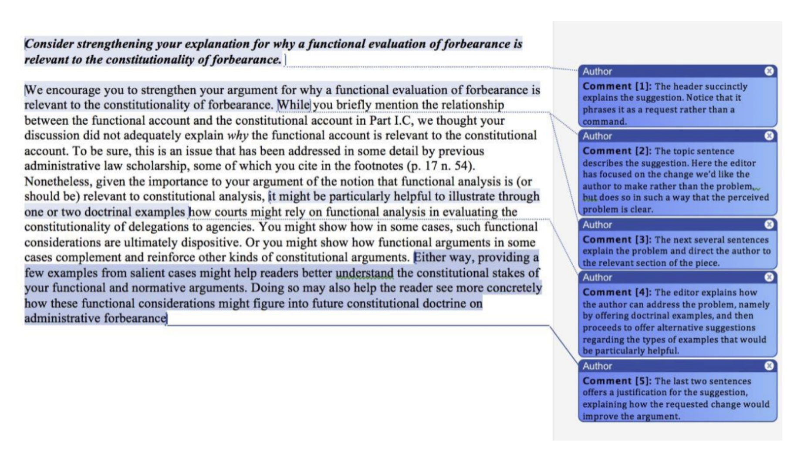

A comprehensive interactive guide to the editorial workflow.
Papers are vetted by senior leadership for core novelty.
Detailed secondary review process conducted weekly.
In-depth third review to determine offer eligibility.
Verification of originality and issuance of the formal offer.
Seven-day window for the author to respond to the offer.
Initial coordination to secure the author's latest draft.
Generation of the initial edit letter and structural review.
Addressing fine-grained structural issues and line-level prose.
Citation verification and final polish of the manuscript.
Preparation of the final Draft Five for author approval.
The manuscript is finalized and released publicly.
After reading each article, you should rate the article from one to five stars and make comments about whether and how the article meets or does not meet our evaluation criteria as explained in the sections below.
Your comments need not be a comprehensive overview of how the article stands with respect to each of our criteria. Rather, you should highlight the overall quality of the article and aspects of it that are most relevant to your rating. As a simplified example, you might want to comment that an article is decent, but you do not recommend publishing it because, despite its interesting topic, the article lacks analytical depth as it only raises a number of interesting (but not groundbreaking) questions without resolving them. Do try to be specific and briefly cite substantive aspects of the article if possible when making your comments, especially when related to its persuasiveness (one of the four evaluation criteria listed below).
You should read the entire article to evaluate it properly. Often reading the abstract and table of contents of an article gives you a rough sense of how good it is and where the article might be lacking. Spend your time wisely and drill down deeper in places that you think are important for your evaluation (for example to verify whether a seemingly interesting argument is adequately supported or whether certain claims are really novel).
Articles that we publish should generally meet the following criteria after edits:
We should absolutely publish this article. It sheds significant light on an important subject of tech legal scholarship and contains well-reasoned, in-depth, and generally clear analysis supported by strong evidence. The article might need some edits for clearer organization and stronger responses to certain significant although not essential counterarguments, but the core idea looks very promising.
The article is quite promising and should turn out great after edits. It makes an important contribution to the current tech legal scholarship and contains generally well-reasoned expert analysis supported by adequate evidence. The article could be clearer at times and may need to address a few important criticisms, but the overall thesis is sound.
The article makes an interesting argument about tech law, but the thesis is not very well supported, and its reasoning may contain one or more fatal flaws; or else its focus is not really on tech law, despite touching on some interesting aspects of technology. Even significant structural and substantive edits are unlikely to improve the article enough for it to meet our publication standards.
The article has little to do with tech law, states an obvious claim, or is poorly reasoned. Even the Yale Journal of Law and Technology's dedicated and hardworking editors cannot save it.
Note that the article does not need to be in a polished, final state yet. The Yale Journal of Law and Technology will have three to four rounds of edits for each piece, so you can give less weight to the writing style of the piece at this submission stage. The important thing is that some of the substantive ideas are promising such that the article will turn out great after edits.
You can also look at past articles as a benchmark. Thank you for reading this memo and for your hard work reviewing articles!
Thank you for dedicating your time and effort to strengthening our pieces and shepherding them from acceptance to publication.
Articles Editorss perform a critical role in the editing process by taking responsibility for fostering the development of content through multiple rounds of edits. Each Articles Editors will lead edit at least one piece per semester. This Guide is meant to provide you with template communications to make the editing process easier to navigate. The big picture: you will be responsible for your piece from start to finish. We expect that you will exercise care at every stage of the editing process.
Unless instructed otherwise, you should conduct all communications with your authors within Scholastica. Please ensure that your assigned Executive Editor and the Editor in Chief are included or copied on all messages.
Thank you again for your hard work. If you have any questions about these guidelines or about our editing and production processes more generally, please contact the Editor in Chief, the Managing Editors, and your Executive Editor.
In general, the editing schedule will run on the below timeline.
When line editing, make all of your edits to the piece with “Track Changes” turned on. Do not “accept” tracked changes to a draft that have been entered by editors, either during sourcecites or the line-editing process. Authors need to be able to see—and approve or reject—every change we make to their piece.
When line editing, all comments should begin with “Author:” to indicate that they are intended for the author. If you are unsure of any of your suggestions or have any questions you would like to chat with your assigned Executive Editor about, then you can leave a comment that begins with “Executive Editor:” for them.
The Guide for Drafting Edit Letters provides examples of such comments. While reviewing those examples, note that the tone is professional and deferential: You should always use complete sentences for your comments. And you should generally open with phrases such as “Consider,” “We recommend,” and “Please.” If you have a question for the author, you should ask that in a comment as well.
A major component of the Articles Editors role is extensively communicating with authors. As a result, it is important that Articles Editorss adhere to the protocols for author communications throughout the editing process.
Ultimately, no set of protocols can substitute for good judgment and common sense. But we hope you will find these guidelines helpful for avoiding some mistakes from past volumes as you take on your Articles Editors duties.
In general, all of the below emails will be in one Scholastica Discussion thread. These templates have been added to Scholastica, but we have included them here for your reference should you ever need to message off of the platform (for example, multiple authors). However, please make note of the subject line even when using the Scholastica templates since the subject line does not auto-populate.
Subject Line: [ACTION REQUESTED] Yale Journal of Law and Technology Acceptance: Congratulations and Next Steps
Dear [Title Last Name],
Congratulations again on the acceptance of [Title]. I will be your lead editor, and I am thrilled to have the chance to work with you on your article. I have attached our first edit letter for your review.
We ask that you please read our proposed suggestions and try to incorporate them into a revised draft by [two weeks from date of message – format: “Day, Month Date”]. After receiving your revised draft, we will follow up with a second edit letter focusing on more granular edits as well as a line edit.
I am happy to touch base in any capacity between now and then as you work through the editing process.
Best,
[Name]
Dear [Title Last Name],
I hope you are doing well! This email is to remind you of upcoming dates for your article. A week from today, [Month Date], we will send you your second edit letter and line edit.
Your next draft will then be due back to us two weeks later on [Day], [Month Date]. As always, please be in touch if you have any questions or concerns.
Best,
[Name]
Dear [Title Last Name],
Please find attached (1) our second edit letter; (2) a redline edit, which includes a draft of your article with tracked changes and substantive comments; and (3) a clean version of the line edit, with the tracked changes accepted, and only substantive comments remaining.
A quick reminder that the revised draft of your article is due on [Day], [Month Date]. Following receipt of the article, the team will schedule a sourcecite date.
I am happy to touch base in any capacity between now and then as you work through the editing process.
Best,
[Name]
Dear [Title Last Name],
Please find attached (1) a redline edit, which includes a draft of the article with the tracked changes made during the sourcecite; and (2) a clean version of the line edit, with the tracked changes accepted, and only substantive comments remaining.
The revised draft of your article is due one week from today on [Day], [Month Date]. Please make all edits to the draft in tracked changes. If applicable, please also send us a short summary of your piece, up to fifty words, by that date. Otherwise, we will display your existing abstract to preview your article on our webpage.
I am happy to touch base in any capacity between now and then as you work through the process of revising.
Best,
[Name]
This document draws from various Yale Law Journal guides.
This document should serve as your guide when drafting edit letters for authors. Edit letters should identify structural and analytical flaws that undermine the persuasiveness of a piece and propose solutions to address those defects. The Yale Journal of Law and Technology accepts a piece for publication because we feel that the author’s argument makes an important contribution to scholarly and popular discourse, and over the course of the editing process, the author and the editors work together to make the piece more impactful and persuasive.
The Yale Journal of Law and Technology typically sends authors two edit letters. The first edit letter, which responds to the first draft (the one submitted via Scholastica), attempts to identify the most serious and foundational flaws. You should think of this initial edit letter as the “big picture” letter. The first letter may ask an author to add a new part, rewrite a section of the piece, or significantly revise the organization. It is important to make these big suggestions early in the process while the author still has a lot of time to revise. As time passes and the article gets closer to publication, the universe of viable suggestions narrows. After receiving the first edit letter, the author will submit a revised draft.
The Yale Journal of Law and Technology will respond with a second edit letter as well as a first line edit. Generally, the second edit letter addresses slightly more granular criticisms than the first. You can think of the second edit letter as the “little details” letter. It may also identify new problems that arise in material that the author added during the revision. The first line edit addresses paragraph-level organizational issues—small analytical issues in a particular passage, unclear argumentation, slippage between paragraphs, signposting, or transition sentences. Your line edits can be a combination of comments and in-text edits made using track changes. When making direct edits, keep in mind that we want to preserve the author’s voice as much as possible. You should avoid making edits based on your personal style preferences. Instead, you should focus on objective issues and improvements.
Following the second edit letter, the author will submit their third draft. The third draft will be what goes through the sourcecite process. After the sourcecite, Articles Editors will work with the Executive Editors to review and (if relevant) incorporate the sourcecite suggestions. Once compiled, the marked draft can be sent to the author to review and add or alter sources (as deemed necessary by the Articles Editor and Executive Editors). This final version will go to the Executive Editors for bluebooking. The Executive Editors will then send their draft to the author for a final approval before publication.
Because the Yale Journal of Law and Technology offers multiple rounds of feedback, a key consideration throughout the process is how to prioritize suggestions. Specifically, at which stage of the process to provide various types of comments. Recall that the first edit letter should focus on the most significant flaws in the piece and those that will require the most work to resolve. In contrast, the second edit letter will feature smaller comments about prose and paragraph-level problems.
In the first edit letter, your task is to identify significant problems with the piece and propose constructive solutions. No piece is perfect, and there are often dozens of criticisms you could offer. Thus, the central challenge in writing an edit letter is to identify the problems that are most central to the author’s project.
A successful critical analysis works within the walls of the piece. In general, you should not need to perform outside research or utilize special expertise. The author is the expert on the subject, not you (or the intended audience!). The author should provide enough information for you to understand (1) how the article fits into the legal landscape, (2) why it is important, and (3) which literature it responds to. If you walk away from an article not understanding any one of those three things, the issue is not that you are not smart enough; the issue is with the way the material is being presented.
There are four key elements to any suggestion in a critical analysis:
There are many ways that you might approach the task of writing the first edit letter, but if you are looking for direction, below is a short description of one strategy. In general, try to keep your edit letter at around 1,000 to 1,500 words, but note that there is no set minimum or maximum length.
Take a few hours to read through the piece. One approach is to start reading and annotating the article right away. Others find it helpful to read the piece twice; once to understand the main argument without being critical (some people deliberately choose not to annotate the piece or even underline during their initial read), and then, armed with a basic understanding of the argument, read through a second time to engage with the piece more critically. This approach is especially helpful if you are not as comfortable with legal scholarship, as it will give you a lay of the land before you start thinking about specific sections and critiques. When you get to marking up the piece, ask yourself the following types of questions: What is the piece trying to do in each section? What does the piece do well and what it does it do poorly? Which passages are unclear? Are there major gaps in the author’s logic? Are certain claims underdeveloped?
Once you have marked up the piece, write a brief outline of the article’s argument. This will help you synthesize the piece’s analysis and see how its various parts work together. It is useful here to outline the article based on the author’s headings and sectional divisions. You want to make sure that you have noted down what the author is saying, exactly how they say it. That way, when you are done with this outline, you will be able to more clearly see where the flaws or gaps are.
When you finish outlining, spend a few minutes reflecting on the core contributions of the piece, its organizational structure, and any thematic elements. Most importantly, identify the author’s main objective in one to two sentences. Highlight this objective at the top of your outline.
Next, spend an hour or so reviewing your notes, reflecting on what you have read, and brainstorming potential revisions. Many people find it helpful to prepare bullet points of possible suggestions. Once you have put all of your ideas on paper, read through them to think about the relationship between your points. Do some of them cluster around a particular theme or issue that runs through multiple sections of the piece? If so, spend a few minutes reorganizing your points so that they are arranged thematically.
The next step is to winnow down your ideas. Given the importance of offering a robust explanation for each point, you may want to home in on four to five suggestions. There are no hard and fast rules; simply make sure that each point is appropriately developed.
As you prioritize your ideas, consider three factors. First, which critiques provide the greatest value? In other words, how much would each improve the piece? One way to assess the value of each idea is to “funnel” them through several levels of review. The biggest issues are generally fundamental problems with the author’s argument, which can arise from faulty or unsupported assumptions, logical gaps or inconsistencies in the analysis, and the failure to address potentially fatal counterarguments. Intermediate issues are often structural and occur when the author has not organized the piece in the most effective way. Smaller issues arise at the paragraph or sentence level and include problems with syntax and micro-level organizational flaws. When identifying the article’s greatest flaws, you should also consider the author’s intellectual project. An editor’s goal is to take the author’s intellectual objectives as a given and help the author make the most effective and persuasive argument possible. The author’s objectives should inform both the flaws you identify and your proposed solutions.
Second, for which critiques do you have a compelling solution? If you have a powerful critique but you do not know how to resolve it, then you should not include it in your edit letter.
Third, are your critiques an effective use of your word count? If it is going to take you eight hundred words to explain the problem and outline the solution, thereby limiting your ability to raise other points, you might consider focusing on more discrete points. You may not know until you start drafting, but do not be afraid to heavily edit—or even remove—some of your suggestions as you work on your edit letter. Deciding which suggestions to pursue is perhaps the hardest part of the edit letter, so it is worth taking the time to reflect carefully.
After you have prioritized your suggestions and selected the ones you want to focus on, start developing a proper outline. As you do so, focus on the four elements that are key to any suggestion:
As an aside, some people feel compelled to “sandwich” every criticism between compliments. This is not something the Yale Journal of Law and Technology encourages. Most authors are used to receiving constructive criticism, and there is no need to soften them up with a compliment. Do, however, use a polite and encouraging tone when offering your critiques.
Armed with your outline for the critical analysis, the next step is to write a first draft. It should be relatively easy to build on your outline, so at the writing stage, the focus should be on effective communication. The Yale Journal of Law and Technology favors clear and crisp writing. When in doubt, prioritize clarity over sophistication. Gratuitously using big words and complex syntax is more likely to harm than help.
As you write, be mindful of audience and tone. Your audience is the author of the piece. As such, your suggestions should address the author directly, and your voice should be both assertive and respectful. Criticisms should be phrased in a way that is constructive, not degrading, and suggestions should be phrased as requests rather than demands (“Consider revising this section” or “We suggest that you implement this change”). Note that editors write on behalf of the organization as a whole and thus we use “we” when making suggestions in our edit letters.
Revision is the key to good academic writing. Thus, the final step is to read through your edit letter carefully several times to ensure the prose is clear, the edit letter is well signposted, and each claim is well organized. As you review, carefully consider whether each section includes the four elements identified above.
Once you have spent a few hours on substantive revisions, be sure to proofread with care. Use spellcheck, proofread a hard copy, read it out loud, and do your best to catch any obvious errors.
Before sharing your edit letter with the author, be sure to email it to your assigned Executive Editor for review (and copy the Editor in Chief). The Executive Editor and Editor in Chief will review your letter, potentially add new suggestions or revise your suggestions, and will anonymize the edit letter before sending it back to you. Once you have received a sign-off from the Executive Editor, they may email the letter to the authors. Be sure to copy your assigned Executive Editor and the Editor in Chief on your email.
Executive Editors: To anonymize the edit letter, please go to the Review tab > Protect > Protect Document > check “Remove personal information from this file upon save.” You should then save the edit letter, which will anonymize all of the edits. Please then return to the “Protect” dialog box and uncheck “Remove personal information from this file upon save.”
By the time you are writing your second edit letter, you will be familiar with the author’s argument. While you must still reread the piece to identify the changes that the author made in response to your first edit letter, you should not need to outline their argument again (unless one of your suggestions required a reworking of the argument, which it generally should not). As mentioned, your focus in the second edit letter will be on the finer areas of improvement, but if you feel that there are still larger issues with the draft, please reach out to your Executive Editor to get their thoughts on how to proceed. Otherwise, you will follow a similar approach as the first edit letter, this time with a focus on (1) minor high-level suggestions, (2) paragraph-level changes, and (3) sentence-level changes to the piece.
At a high level, consider whether there are any remaining overarching structural or substantive changes the author should make. The issues you flag here may have existed in the first iteration of the piece (and were not significant enough to flag in the first edit letter) or may have come to be as a result of revisions made based on the first edit letter. Your suggestions at this level will make up the bulk of your second edit letter. The rest will be explanations of your line edits, which will focus on paragraph-level and sentence-level changes.
On the paragraph level, consider whether the paragraphs and sentences are in the best order; whether the paragraphs are clearly introduced with topic sentences; and whether the paragraphs serve the goals of their sections. If you have to read a paragraph twice—either now or when you first read the piece—that is a problem: a reader is not going to give the article that level of attention. Suggest changes to make sure that each argument is clear on a quick read. Most paragraph-level issues should be accompanied by author comments either: a) explaining the change to the author; or, less preferably, b) suggesting that the author make the change.
On the sentence level, ensure that each sentence is short, active, and grammatical. Sentence-level changes are less likely to require an author comment.
After you make your changes, please turn Microsoft Word to “Simple Markup” and look through a clean version of the article. But do not to accept any changes yourself. We must not introduce errors into authors’ articles, and we must make sure that our authors are able to accept (or reject) all of our changes.
When working on a line edit, keep in mind that the experience of reading a line edit can be hard for authors if it seems like a line-by-line attack on their work. Accordingly, please try to use deferential language in the comment bubbles, employing phrases like “Please consider” or “We recommend.” Authors have the final say over these decisions and are more likely to accept our recommendations when they are written in the spirit of collaboration.
Finally, please make sure that all of our correspondences with authors remain professional. Comment bubbles should employ correct grammar and syntax. Comment bubbles should generally identify suggestions for “the Essay,” rather than telling an author “You should consider . . . ”
Below is an annotated example of an effective part of an edit letter that contains the four elements identified above (summarize the problem; explain the problem; identify a solution; justify the suggestion).

When selecting your suggestions, the central objective is to engage with the piece on its own terms: what is the author’s goal, what argument strategy have they adopted, and how can this strategy or the execution thereof be improved to better achieve the author’s objective? In light of this individualized exercise, there are no one-size-fits-all critiques or stock edit letters to draw upon. That said, certain categories of problems do tend to recur across pieces. Below is a list of some common issues that appear in edit letters. However, we emphasize that this list is meant to inspire, not to constrain. Some of the most important flaws in an article may not fit within these categories, so do not limit yourself to these categories.
A. Copy editing
Our goal is to make each piece as smooth and clean as possible within the bounds of retaining the author’s voice. Unless a draft comes to us particularly well written and polished, your line edit should not be limited to changing objective errors, like grammar. You should also focus on improving the piece’s flow, clarity, and overall accessibility to readers.
Copy editing often entails significant rework, such as rephrasing substantial portions of sentences, suggesting deletions, suggesting text that should be moved into footnotes, and reordering sentences or paragraphs. If a sentence is in particularly bad shape, you can leave an author query instead of reworking it yourself; see Part III below for a sample.
Look for places where the author could be more concise. Some authors might have a natural tendency to repeat a point multiple times. It is our job to help the authors refine their argument not just substantively but also stylistically.
B. Objective errors in the main text
During the First Line Edit, be especially watchful for objective errors in the main text. Common errors authors might introduce include (but are not limited to) the following:
C. Global comment
Please leave a comment at the top of the document thanking the author for the draft and flagging any important global suggestions we have. See Part III below for a sample.
D. Missing roadmap
First drafts may omit the “roadmap” that we typically include at the end of the Introduction. In such cases, please leave an author query recommending one. See Part III below for a sample.
E. Missing citations
Drafts may omit citations in instances where support is required. In such cases, please leave an author query asking the author to add a citation to support their claim. See Part III below for a sample. The advantage to requesting all citations at this stage is that we can guarantee that every footnote (in its complete form) is subject to our sourceciting process.
The suggestions outlined in Part I apply to the Second Line Edit as well. At this stage, please additionally keep in mind the below points.
A. Bluebooking
During a Second Line Edit, the piece you are editing will have been sourcecited. While you do not need to check the underlying sources for accuracy for the purposes of your line edit, please check each footnote for proper Bluebooking and style.
B. Author responses
The author may have responded to the queries we left in the First Line Edit. If so, please respond with an author query. This can be as simple as “Thank you!” if no specific answer is needed. If the author has addressed and resolved a query we left in the First Line Edit, you may delete the resolved comment from the document if you wish.
This Part contains several sample queries that you may use in your line edits, if helpful. Please be sure to customize the bracketed fields based on the context.
A. Global comment
B. Roadmap comment
C. Miscellaneous
A preemption check is a crucial step in the editorial selection process. It determines whether a submitted article's central arguments have already been published in existing legal scholarship.
Begin your evaluation by keeping a standardized grading scale in mind. After reviewing the piece and the existing literature, you will assign one of the following preemption levels to the submission:
Your memo should open with a high-level summary that provides the assigned preemption level and a brief justification.
Internal preemption evaluates whether the author's own foundational sources have already made the argument the author is trying to claim as novel.
External preemption evaluates whether the broader universe of legal scholarship—outside of what the author explicitly cited—has already made the author's arguments.
Preemption level1: Low-Moderate
Summary
Some concerns, but nothing very serious. Many of the themes the author discusses (e.g., territorial exceptionalism, status manipulation) are already explored, and in general, the field of scholarship on Aurelius and the Insular Cases is quite saturated. That said, the author makes some (relatively) unique arguments—specifically, that overturning the Insular Cases would not spell an end to their harms and that calls for judicial overthrow should consider delicate legal interests surrounding self-determination and self-government which have developed around the Insular Cases doctrine.
In sum, this submission would make a moderately original contribution to the law of the territories, but it borrows from established normative and descriptive frameworks and it would not be foundational to its field.
The scholarship that the author relies on (e.g., the literature it cites on Article III exceptions, status manipulation, and the Insular Cases) does not directly preempt its argument. Below, I list some of the relevant sources it cites for support.
The author’s project on reimagining judicial interventions for the Insular Cases raises minor external preemption concerns, though nothing serious.
Their reimagining consists of two main analytical points. First, that “the core constitutional problems of territorial exceptionalism and status manipulation run deeper than the specific doctrinal framework of the Insular Cases, whose judicial overthrow would not necessarily spell an end to the harms of the legal order they represent.” The constitutional problems of territorial exceptionalism and status manipulation have already been canvassed. See, e.g., Sam Erman, Truer U.S. History: Race, Borders, and Status Manipulation, How to Hide an Empire: A History of the Greater United States by Daniel Immerwahr, Farrar, Straus & Giroux, 2019, 130 YALE L.J. 1188 (2021); Andrew Hammond, Territorial Exceptionalism and the American Welfare State, 119 MICH. L. REV. 1639 (2021). Thus, the author’s descriptive account of these problems is not novel, and it largely borrows points from existing literature. Likewise, as noted above, there is abundant scholarship on Aurelius and the Insular Cases. See, e.g., The Insular Cases in Light of Aurelius, YALE L.J.F. (Nov. 2, 2020), https://www.yalelawjournal.org/collection/the-insular-casesin-light-of-aurelius. But in contending that the problems of status manipulation and territorial exceptionalism “run deeper than the specific doctrinal framework of the Insular Cases,” the author forwards a relatively original argument. Most works on Aurelius and the Insular Cases focus on how the Insular Cases need to be (and should have been) overruled. As the author correctly describes, “calls for judicial intervention concerning the Insular Cases redirect their focus to the many historical and doctrinal parallels between the Insular Cases and other anticanonical cases that have been overturned—namely Plessy, and now, Korematsu.” See, e.g., Neil Weare, Why the Insular Cases Must Become the Next Plessy, HARV. L. REV. BLOG (Mar. 28, 2018), https://blog.harvardlawreview.org/why-the-insular-cases-must-become-the-next-plessy. The author argues that these scholarly calls must be “carried to their next logical station,” which this submission attempts to accomplish. Therefore, from what I could find, the author’s argument seems to be relatively unique, even if the underlying themes it borrows from are not.
The author’s other main point on judicial interventions is that “a blind leap from [the Insular Cases] framework carries the very real risk of flattening a path-dependent framework of indigenous rights and long-running processes of political self-determination and self-government across these islands.” This raises more preemption concerns. The author briefly cites to Russell Rennie, Note, A Qualified Defense of the Insular Cases, 92 N.Y.U. L. REV. 1683 (2017). Unlike the scholarship I discuss in the Internal Preemption section above, the author does not rely on this note for support, but rather cites it as a “But see” for the proposition that no viable defense of the Insular Cases exists. And indeed, for the most part, Rennie’s stance on the Insular Cases and the scope of its discussion (particularly as a pre-Aurelius piece) is distinct from the author’s. But Rennie’s note reveals that the author’s argument about legal interests surrounding self-determination and self-government is not so novel: the note argues that the Insular Cases have had the effect of “maximizing local self-determination,” id. at 1706 (typeface altered), and “enable[ing] local peoples to govern themselves as they desire,” id. at 1683. I encountered a fair amount of additional scholarship likewise acknowledging (if not always endorsing) this analytical link between the Insular Cases/territorial incorporation and the development of self-determination/self-government legal interests:
Granted, these works do not explicitly intervene in the Aurelius/Insular Cases discussion. But given that the author’s self-determination/self-government argument seems somewhat underdeveloped (a non-preemption-related quibble I have with the piece), it’s difficult to say with confidence that the author really charts new territory.
1 Key:
• Complete = essentially identical piece exists
• High = argument has been substantially made and fleshed out; piece is distinguished primarily in ancillary discussion and/or execution
• Moderate = Parts of the argument have been made in a piecemeal fashion, but the particular execution of the piece still allows for a significant contribution
• Low = argument has been alluded to (e.g., in footnotes or passing) but never fleshed out
• None = this article will be the foundation of the field
I. Consider situating your Article in an existing scholarly debate.
You provide a comprehensive overview of the evolution of the reproductive justice (RJ) movement, the trajectory of reproductive rights post Roe, and the role of stare decisis in judicial decision-making. But you do not situate your argument about the implications of Justice Thomas’s Box concurrence in an existing scholarly debate. Without this additional context, some readers may be left wondering whether—or to what extent—your contribution is unique.
We recommend that you clarify the relationship between your Article and existing scholarship by adding a literature review to your Introduction. That literature review should establish whether you are the first to analyze the Box concurrence. It should also explain how other scholars, as opposed to the activists and litigants featured in Section II.A, have evaluated arguments equating abortion rights with state-sponsored racial genocide. In the event that you are both the first to analyze the Box concurrence and the first to evaluate arguments equating abortion rights with state-sponsored racial genocide, your literature review should connect your argument to existing conversations surrounding abortion rights generally. You could create this literature review by discussing various works that you already cite in your Article (e.g., footnotes 18 and 26), as well as any additional academic sources that Justice Thomas may have cited in his concurrence. By explicitly engaging with existing scholarship, you will ensure that your readers are able to fully appreciate the uniqueness of your argument.
II. Consider strengthening your claim that the Box concurrence has “gained traction.”
You argue that Justice Thomas’s reasoning has “gained traction” in the lower federal courts (19). But you offer only three case examples, none of which adopt Justice Thomas’s approach. Instead, all three cases merely highlight the open question that Justice Thomas raised (19-21). And, as you point out, all three cases involve trait-selection statutes centered on disability, rather than race (21). Given that Box is almost two years old, the lack of caselaw adopting Justice Thomas’s concurrence seems to suggest that it has not, in fact, “gained traction.” Some readers may thus question your central claim that the Box concurrence is poised to undermine the Supreme Court’s precedents regarding reproductive rights and racial discrimination.
To address this concern, you could consider three approaches. First, you could identify and discuss more case examples. If you are unable to find more examples in the lower federal courts, you could identify and discuss state court cases. Second, if no such cases exist, you could identify and discuss concurrences that have shaped legal doctrines after periods of dormancy and compare them to Justice Thomas’s Box concurrence. Third, you could explicitly acknowledge that Justice Thomas’s rationale has not “gained traction” yet, but stress its potential to shape abortion caselaw in the years to come. By adopting one or more of these approaches, you would either bolster your central claim or state its stakes in more realistic terms.
III. Consider reorganizing your argument.
Your discussion of the Box concurrence is central to your argument. But its placement does not reflect its importance. In your current draft, Part I and Section II.A discuss the RJ movement. Section II.B evaluates the Box concurrence. And Parts III and IV discuss the implications that the Box concurrence may have on reproductive rights and anti-discrimination law. This organizational structure buries your discussion of the Box concurrence beneath your discussion of the RJ movement, and obscures the distinction between the first and second steps in your argument.
We recommend that you reorganize your argument as follows. Part I and Section II.A. would be consolidated into a new Part I,1 which would provide the historical background needed to understand the Box concurrence. Section II.B would become Part II, which would introduce and discuss the Box concurrence, as well as the various lower federal court opinions that refer to it. Parts III and IV would discuss the implications of the Box concurrence as they currently do. Reorganizing your existing sections into these parts would ensure that your discussion of the Box concurrence receives the attention it requires—and that your readers are able to follow each step of your argument with ease.
IV. Consider concluding with prescriptive claims.
Your criticisms of Justice Thomas’s reliance on “misleading and incomplete history” make clear that you disagree with his characterization of abortion rights and are concerned about the future implications of his Box concurrence (1). But your Article offers little, if any, guidance as to how those implications should be addressed. This limits your Article’s potential impact.
We recommend that you conclude your Article with a series of prescriptive claims directed towards judges, lawyers, legislators, and healthcare providers. In developing your recommendations for each group, you could draw on material that already appears in your Article. For example, in developing your recommendation for judges, you might consider the reasoning of the opinions that rejected Justice Thomas’s rationale in the cases you discuss in Section II.B (19-21). In developing your recommendation for lawyers, you might draw on the litigation strategies used in those same cases (19-21) or in the cases you refer to in Section II.A (14). In developing your recommendation for legislators, you might analyze the trait-selection statutes you refer to in Section II.A (14). And in developing your recommendation for healthcare providers, you might begin by reflecting on Planned Parenthood’s recent decision to remove Margaret Sanger’s name from its Manhattan Health Center, which you discuss in your Conclusion (50-51).2 Including these recommendations would further clarify your normative position and serve as a valuable addition to your scholarly contribution.
Word Count: 991
1 Your new Part I could preserve the distinction you currently draw between Part I (“The Emergence of the Reproductive Justice Movement”) and Section II.A (“Racial Justice and Abortion Rights”) by organizing its newly consolidated text under two subheadings.
2 You might ask whether Planned Parenthood’s decision to remove her name legitimizes the Box concurrence or protects healthcare providers from its potential implications.
I. Consider bolstering your argument that the Box concurrence poses an existential threat to Roe.
The piece sounds the alarm about Justice Thomas’s Box concurrence as “plant[ing] the seeds for a potentially more successful strategy” (3) that could lead to the Supreme Court “eviscerating Roe” (39). You persuasively demonstrate that the logic of the Box concurrence provides one plausible avenue for overturning Roe. But without also demonstrating a strong possibility that a Court majority is willing to adopt this logic, we worry that the piece provides a rebuttal to a problem that does not yet exist and is unlikely to materialize.
A number of observations in the piece fuel this concern; chief among them is the fact that “no other member of the Court joined Justice Thomas’s concurrence” (2). Moreover, in all of the lower court decisions (and briefs) in which it makes an appearance, the Box concurrence argument does not ultimately prevail (19-21). Finally, the Article points out that the Court has a “long-standing record of sequestering its discussions of abortion from discussions of race and inequality”(42). Even as advocates and Justice Thomas attempt to co-opt the framework of reproductive justice, the Supreme Court has not. Without showing that the Court could plausibly adopt this specific approach, the Article reads as a response to Justice Thomas’s idiosyncratic views.
First, to emphasize the stakes of the Article’s argument, we encourage you to more directly address the likelihood of the Court adopting Justice Thomas’s argument. Consider providing an explanation for why no other Justices joined the Box concurrence. Are there reasons to believe that, given a different set of facts, other members of the Court would vote differently?
Second, we encourage you to highlight your account of the non-juricentric stakes of Justice Thomas’s Box concurrence. As the Article implies, beyond raising the possibility of overturning Roe, the Thomas concurrence is indicative of a broader co-option of the RJ framework by the anti-abortion movement. To underscore the importance of your argument, expand your discussion of the deleterious impact that Justice Thomas’s argument and the selective historical claims it relies on have had to the goals of the RJ movement in the public eye.
II. Consider responding to objections that stare decisis is not a serious obstacle to overruling Roe.
The stakes of your argument also rest on the assumption that the Court needs a novel “special justification” to circumvent stare decisis in order to overrule Roe (26). And that Justice Thomas’s argument in his Box concurrence is the magic bullet that will finally allow the Court to overcome the stare decisis hurdle. But this assumption is vulnerable to a number of related objections that we recommend you address directly.
First, realist critics may argue that in light of recent conservative additions to the Court, it actually is “enough simply to cobble together a majority of five who believe Roe was wrongly decided” (26). Given the many other avenues available for overruling Roe, the Court has no need for the Box concurrence argument. Second, critics may argue that directly overruling Roe is not even necessary for eviscerating constitutional protection for abortion rights. Instead, the popular argument goes, Roe will face death by a thousand cuts. This indirect approach has the advantage of avoiding the stare decisis problem altogether.
We suggest you address these objections in Section III.A by surveying some of the other plausible ways that the Court may go about eviscerating Roe, and comparing them to the Box concurrence route your Article describes. We also encourage you to strengthen your claim that “stare decisis is . . . the reason why Roe cannot be overturned” (26) by directly addressing these objections.
III. Consider differentiating the types of racial equity-based argument advanced by the Box concurrence.
We encourage you to more clearly differentiate the various strands of argument in Justice Thomas’s Box opinion as they relate to the Article’s central claims. The Article’s summary of Justice Thomas’s decision suggests that the Box concurrence advances a single line of argument “linking abortion to eugenic racism” (18). But throughout the Article, you associate at least three analytically distinct strands of racial equity-based argument with the Box concurrence:
Depending on the Article section, different strands of the Box concurrence are at issue. For example, Section IV.B, which argues that the Box approach is inconsistent with Justice Thomas’s commitment to color-blind constitutionalism, focuses entirely on Thomas’s reference in Box to “the disproportionate incidence of abortion within the Black community” (47) the disparate impact argument. Meanwhile, Section III.C & D relating Ramos to Box focus entirely on the racist origins claim, explaining that decisions “infected by racial animus” are not bound by stare decisis.
This gives rise to two potential concerns. First, from the reader’s perspective, it becomes unclear which exact racial harm Justice Thomas’s Box concurrence is asserting. And second, critics may allege that the Article selectively switches between different parts of the Thomas concurrence to support different conclusions, in the process conflating analytically distinct racial harms.
We encourage you to provide a more careful reconstruction of Justice Thomas’s Box concurrence in Section II.B. Lay out and distinguish the different types of racial harm that Justice Thomas associates with abortion early on. On your reading of his opinion, are these claims different strands of a single racial equity-based argument, or are they different arguments altogether with a shared end? Finally, we suggest that you clarify which strands of argument are most important for purposes of the Article’s central theses. For instance, which claims pose the most serious threat to Roe? Which claims pose the most serious threat to the RJ movement? And which claims pose the most serious threat to “the broader project of racial justice?” (44).
Word Count: 999 Words
A. Consider addressing arguments that Ramos v. Louisiana's circumstances are easily distinguishable from abortion, and thus is not an example of how Roe is threatened by the Box concurrence's logic.
We encourage you to address arguments that Ramos v. Louisiana's circumstances could be easily distinguished from abortion by courts, as that means the Box concurrence's logic does not pose a significant threat to abortion and this piece's singular focus on one Justice's concurrence is unnecessary. In Part III, you argue how the concurrence "lays a foundation for undermining, and eventually overruling Roe v. Wade" (22). You explain how the Court has overturned precedent when there is an "interest in correcting racial wrongs" (e.g., in Brown v. Board of Education) (31). You acknowledge how these examples may not connect perfectly to abortion now as they either involve "facial racial classifications" or are older cases (Id.).
However, Section III.C examines one modern case, Ramos v. Louisiana - which did not involve facial racial classifications but that overruled precedent - to argue that the Box concurrence truly threatens abortion. But one could argue that Ramos's context is too different from abortion to be relevant. For example, in Ramos, the Court held that the challenged non-unanimous jury rule was created specifically to "ensure that African-American juror service would be meaningless," which tipped the balance in overturning precedent (34). However, with abortion, Margaret Sanger's racial views may not have directly motivated policymakers or judges who ultimately expanded abortion access nationwide. This situation differs from Ramos when the Court highlighted that the only two states with these rules were specifically motivated by race. As such, Ramos may not point to abortion truly being threatened even with the Box concurrence as the comparison is easily rebuttable.
It is important to defend this comparison as Ramos is your primary modern example that signals that the Court could use the Box concurrence's logic to undermine abortion. For example, you can directly acknowledge that Ramos's context is different but that this concern is irrelevant as the crucial consideration is race serving as a "tipping point" (38). Thus, the fact that purported racist origins exist for a debated, "unenumerated right[]" like abortion means that Roe is still in danger and this piece's focus on this subject is justified.
B. Consider emphasizing earlier in the piece how race only needs to be the "tipping point" to potentially overrule Roe, so that readers better understand the Box concurrence's potential consequences.
We encourage you to emphasize earlier in your piece how race is not likely to be the sole reason that abortion rights are overturned, but rather serve as a "tipping point," as that will help your readers better understand the Box concurrence's consequences. In your introduction, you explain how the concurrence "provides a roadmap ... to challenge Roe" as race will be the "special justification" needed to overturn abortion precedent (3). You signpost your argument's progression, with Parts I and II laying out "a contextual foundation," Part III explaining how stare decisis has protected Roe but that the Box concurrence's focus on race threatens Roe, and Part IV contemplating "the broader implications" (4-5).
Readers may better understand your piece's progression to and in Part III by highlighting earlier how "race need not ... be the reason for overruling Roe" but can serve "as the crucial element-the tipping point-that shifts the balance toward overruling" when "concerns [exist] about unenumerated rights and the workability of abortion doctrine" (38). If readers knew this more nuanced possibility of how the Box concurrence's logic could be used to overturn Roe earlier in the piece, they may be less likely to initially question the relevance and applicability of your examples of the Court overruling precedent because of explicitly facial racial classifications (e.g., Loving v. Virginia). You acknowledge that "it is unclear whether concerns about race, by themselves, would be enough to render Roe ripe for overruling" (Id.). You should provide readers this clarity earlier in the introduction that race only needs to be a contributing factor to undermine abortion. For example, when explaining your piece's structure in the introduction, you could add a line before previewing Part IV that explains how Part III will show that Ramos is instructive in demonstrating that race only needs to be a "tipping point." Clearly signposting the nuance of the argument will help readers better follow your piece's progression and understand the Box concurrence's significant consequences.
C. Consider making explicit the connections between your arguments that are supported by citations but left unexplained in the text, as that would increase readers' understanding of how certain points build on one another.
We encourage you to make explicit the connections between your arguments that are supported by citations but left unexplained in the text, as that would increase the ease that readers have in following certain points' progression. For example, in Part I, you explain the reproductive justice movement's emergence and how Roe "resolved the conflict [around abortion] by resorting to the constitutional discourse of negative rights" (6). However, your main paragraph on page 6 that explains this point, which cites scholars like Robin West and Mary Ziegler, can be difficult to fully understand as the connections between points are not explicitly mentioned in the text (Id.). You reference West that "rights and rights rhetoric ... discredit[] precisely the democratic, popular, majoritarian, and political deliberation and reform it would take to upend them" (Id.). But your text leaves unexplained how precisely rights and their rhetoric discredit deliberation and reform. While readers could reference the source, it would be useful to explicitly explain this connection in an added sentence, as you then further build on this discussion by expanding on how courts' work is centered by "rights," which "feed[] a distrust of ... public deliberation" (Id.). Without explicitly explaining how rights discredit deliberation, the paragraph's progression can be confusing. Making explicit these connections between arguments will help readers better see how your points build on one another.
Word Count: 999